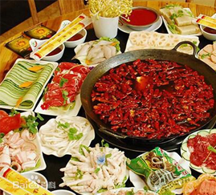

渝菜，也称重庆菜，渝菜是以巴渝地区菜品为主，渝菜以味型鲜明，主次有序为特色又以麻辣鲜、嫩、烫为重点，变化运用，终成百菜百味的风格，广受大众喜爱。 由重庆商委牵头编制渝菜标准体系渝菜术语和定义》及首批12个渝菜烹饪技术规范，已经通过国家标准委审核备案，并正式发布。
二十年代在重庆江北城发展壮大。 一般挑担子零卖小贩将水牛毛肚买后，洗净煮一煮而后将肝 子、肚子等切成小块，于担头置泥炉一具，炉上置分格的大铁盆一只，盆内翻煎倒滚着一种又麻辣 又咸的卤汁，于是河边桥头一般卖劳力的工人，便围着担子受用起来。各人认定一格且烫且吃，吃 若干块，算若干钱，既经济，又能增加热量……直到民国二十三年，重庆城内才有一家小饭店将它 高档化了，从担头移到桌上，泥炉依然，只将分格铁盆换成了赤铜小锅，卤汁、蘸汁也改为由食客 自行配合，以求干净而适合重庆人的口味。
鸡油 鸡油是用于火锅的高档油脂，其营养丰富，鲜香味浓，主要用于清汤火锅鸡油的加工方法，一是加 入姜片用小火炼制，一是加姜片葱结上笼蒸制，以蒸制的为佳，但是香味较差，最好还是熬制的效 果好，但是颜色较差，就是在熬制鸡油快起锅的时候用生姜大蒜和洋葱在锅里炸成金黄色滤去料渣 即可，香味好的很，不信大家试下。 选购提示：鸡油一般选用冻品，以色微黄无杂质，水分含量低为佳。 菜油 菜油是由油菜籽榨制而成，，在重庆火锅中主要用于漤炒调味品，使其吃色出味。 选购提示：以味香，颜色金黄为佳。油。牛油可以增加卤汁中的香味，保持原汤的温度，增加用料的色泽；猪油除增加原汤香味外， 鸡油是用于火锅的高档油脂，其营养丰富，鲜香味浓，主要用于清汤火锅鸡油的加工方法，一是加 入姜片用小火炼制，一是加姜片葱结上笼蒸制，以蒸制的为佳，但是香味较差，最好还是熬制的效 果好，但是颜色较差，就是在熬制鸡油快起锅的时候用生姜大蒜和洋葱在锅里炸成金黄色滤去料渣 即可，香味好的很，不信大家试下。 选购提示：鸡油一般选用冻品，以色微黄无杂质，水分含量低为佳。 菜油 菜油是由油菜籽榨制而成，，在重庆火锅中主要用于漤炒调味品，使其吃色出味。 选购提示：以味香，颜色金黄为佳。 油。牛油可以增加卤汁中的香味，保持原汤的温度，增加用料的色泽；猪油除增加原汤香味外，
火锅与主食：吃火锅时往往会忘记主食，或者在肉残汤浓的时候才下一点面条、小饺子或年糕片。这种做法的结果就是肉类吃得过量，淀粉 严重不足，体内产生大量废物。正确的做法是在开始吃肉时便吃少量淀粉类食物，一则帮助控制食量，二则保护胃肠健康，同时有益营养平
火锅与主食：吃火锅时往往会忘记主食，或者在肉残汤浓的时候才下一点面条、小饺子或年糕片。这种做法的结果就是肉类吃得过量，淀粉 严重不足，体内产生大量废物。正确的做法是在开始吃肉时便吃少量淀粉类食物，一则帮助控制食量，二则保护胃肠健康，同时有益营养平